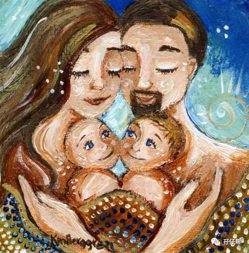
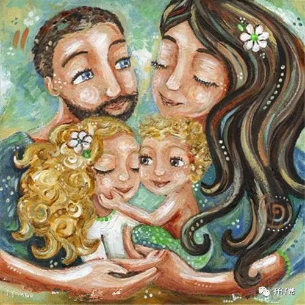
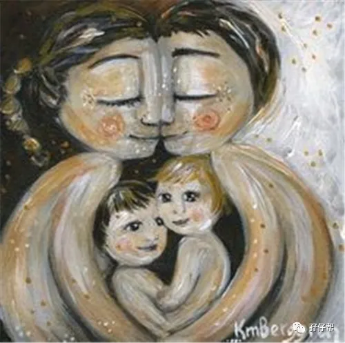

文|圆圈妈，一个文思如尿崩的双胎妈妈
图|来自网络，如有侵权，请联系删除
【01】
人家有人家的过法，自家有自己的情况
“你看谁谁谁家的老公，简直就是“超级奶爸”，在家里一人带俩娃，还会干家务，你再看看你，只会“葛优躺”，尿不湿不会换，垃圾也懒得倒！就不能帮我一下嘛？"
当你为了两小屁孩的事情忙得晕头转向时， 正好看到哼着歌的宝爸下班回来了，你的内心是不是有股无名火往上冒，然后就开始“机枪扫射”了...如上文！
这普遍存在于新手妈妈，总是情不自禁想吐槽自家老公，惯用经典术语是「你看谁谁谁家老公…. 」
实不相瞒，我也是这样的！
人人都说，为母则刚。
但我从心底里不想被这句话绑架，有老公在，我为何不能继续当我的小公主。
我在孖仔帮公众号的文章中曾多次提到，爸爸在双胞胎养育过程中的重大作用， 而我本人的真实感言就是，我真的觉得没有队友在，我不可能活下来！
圆圈兄弟出生后，日子像灾难片一样如履薄冰，我无时无刻不希望队友在身边，甚至想把他劈成两半，一半去赚钱，另一半去奶娃，再给他安插三头六臂，然后...我只需要按下启动键，就可以哪里凉快哪里去了！
而队友也确实很给力，白天在腾讯大厦与群魔乱舞的代码交战，晚上在两孩子的屎尿屁中周旋，丝毫没有半句怨言。
因此，我大胆地放言，宝爸是史上最靠谱的育儿神器，没有之一。
一次机缘巧合下，拜读了日本脑科学婆婆加代子的作品《0—6岁全脑教育》，书中提到一个观念，不要过分强调奶爸的作用。
我突然觉得自己以前的观点太草率了!
每个双胞胎家庭的情况都各不相同，人家有人家的过法，自家有自己的情况，适合我的夫妻相处之道和育儿理念未必适合其他小两口。
这取决于很多因素，比如小两口的夫妻感情，生活习惯，性格特征，收入水平以及家庭成员的构成。
我家的队友没有上层领导的压力，工作时间相对弹性，最主要的是，他是发自内心地喜欢小孩，即便是累到眼睛没空眨一下，他都想回家后第一时间给圆圈兄弟喂奶，换尿布，除了想要帮助我，更多的是他自己本身乐意这么做。
【02】
爸爸依然是一个家庭的主要劳动力
当初我要创建双胞胎爸爸群，有很多妈妈表示不理解，「一群大老爷们，有啥子好聊的，不要上班啊？不用赚钱啊？」
的确，根据目前我国现在的家庭成员的地位和作用来看，爸爸依然是一个家庭的主要劳动力。
作为一名传统女性，我也确实认为，年轻的爸爸们，最重要的还是应该好好工作，毕竟，养家糊口的重任基本上是由爸爸去实现的！
尤其是家有双胞胎的家庭，经济压力翻倍，爸爸对此会特别焦虑，正如妈妈特别关注如何照顾教育好两孩子一样，都是为了这个家庭着想，只是关注的侧重点不一样。
如果此时，妈妈选择辞职带俩娃，建议妈妈应该放下18岁少女的骄傲，一心一意照顾好两孩子，全心全意辅佐爸爸管理好后院。
我们女人经常会对“别人家的老公”送出很多溢美之词，对自己家那位，却一脸嫌弃，其实这是很不公平的。
每一个爸爸都有各自的特点，都有各自表达爱的方式！如果全部都是“同款网红奶爸”，那要P图软件来干嘛？
那些经常拿“别人家的老公”脱口而出的妈妈们，请问你对别人家的老公知道多少？了解几分？
说不定，被你高度称赞的“超级奶爸”有时间接送孩子，也许是他工作时间弹性化，也许是他本身就是大BOSS，金钱和时间自由。
而你的队友，只是众多“996”的代表之一。
在单位里累死累活地加班加点，回到家后还要操心这个娃拉多少，那个娃吃多少，这个崽睡多久，那个崽玩多久...
人的精力毕竟有限！家庭与事业总会有或多或少的冲突和矛盾。
此时，就看爸爸们如何取舍了！
【03】
别人家的老公曾经也是猪队友一枚
其实，所谓“别人家的老公”，也是从猪队友进化而来的，在此，我想跟双胎妈妈们共勉一些心得。
①与宝爸打开天窗说亮话
养育双胞胎是一项极具挑战性的工作，足以榨干父母的每一份精力，这项工作最根本、最严重的问题就是人手不足!
此时，宝爸若能在不影响工作的情况下，加入到育儿大军，并发挥中坚力量，无疑是如虎添翼。
小两口同心协力，根据自身情况摸索出适合自己的生活方式，育儿理念和独家的双胞胎育儿经。
②与宝爸比一比，谁赚钱多
如果妈妈和爸爸一样，需要全勤工作，并且收入与爸爸相当，甚至更高，那么小两口就要认真协商，育儿工作如何分配，力争资源利用最大化，养娃赚钱两不误。
如果妈妈的赚钱能力有限，那要衡量下，是否要退居二线当全职妈妈，包揽下所有育儿工作，一心一意辅佐宝爸，让他没有后顾之忧，只管在赚奶粉钱的路上前进，前进，再前进。
③停止对宝爸的“非分之想”
这里的非分之想是指，期望着养育双胞胎的重任，宝爸能帮助你分担多一点。
这样的你，注定会憋出内伤。
期望越高，失望就越大！
不如一开始就顺其自然的心态，反而会有意想不到的收获。
宝爸可以一人带俩娃，并能打持久战而不败下阵，自然是好事！
但如果宝爸为了不想让你和孩子们失望而逞能，耗费了过多的精力，以至于影响到工作，那就得不偿失了。
在育儿这件事情上，夫妻双方的相互理解是很重要。
从你选择退居幕后那一刻开始，你们就应该达成共识，相互牺牲，相互成全。
【04】
我不是卧底，我为妈妈们带盐
最后，我想为自己辩解下，我不是双胞胎爸爸群派来的卧底！
这篇文章不是给爸爸们一个当甩手掌柜的理由，不是一个淡出育儿工作的借口。相反，爸爸们更加要好好珍惜和发自内心地理解那个默默在背后支持你的女人！
养育双胞胎，够苦了吧！
为了支持爸爸们的事业，大多数妈妈们都选择顾全大局，在育儿如此艰难时刻，自愿自觉承担起教养孩子的重任。
为此，爸爸们除了在事业上多加努力，更加应该在事业游刃有余的同时，协助妈妈，分担一些力所能及的育儿工作。
如果宝爸真的对育儿感兴趣，喜欢与孩子们一起玩，那就再好不过了。
毕竟爸爸在孩子成长的过程中扮演的角色是不容小觑的，在保证工作不受影响的大前提下，高质量陪伴着两孩子，即是一个为人父应尽的职责，也是为人夫该有的担当。
莫让自家媳妇活在“别人家的老公”的阴影下而无法自拔！也坚决不让两孩子，活在“别人家的爸爸”的阴影下成长。
-END-
今日互动话题
#给你五星好评，快来说说你家的双胞胎爸爸#
评论区聊一聊
说出你的槽点吧
一好文推荐一
一加入社群一
一关注孖仔帮一
点击“阅读原文”，直达双胞胎育儿网站www.sgguy.com.



